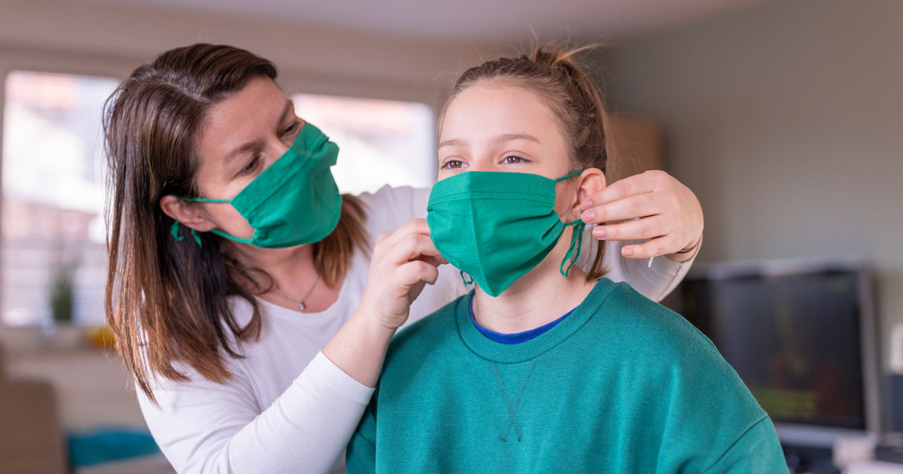

Experts recommend wearing face masks: Learn what kind to wear and how to wear one safely
Research shows that wearing a mask is an important preventive measure when it comes to the coronavirus.According to CDC case studies, masks successfully prevent the spread of COVID-19, and a recently released CDC scientific brief emphasizes that masks do in fact protect the wearer – not just other people.
Released on November 10, the brief details mask-wearing research, concluding that epidemiological data supports mask-wearing as a way to reduce the spread of COVID-10.stating: 'Studies demonstrate that cloth mask materials can also reduce wearers’ exposure to infectious droplets,' and masks with multiple cloth layers and higher thread counts are more effective.
According to Dr.Robert Redfield, the director of the CDC: 'Cloth face coverings are one of the most powerful weapons we have to slow and stop the spread of the virus – particularly when used universally within a community setting.All Americans have a responsibility to protect themselves, their families, and their communities.'
Do not use surgical masks or N-95 respirators.We must reserve these supplies for health care workers who are on the frontlines of this pandemic.
Valve masks are not recommended because they only protect the person wearing the mask.These kinds of masks, that have a small plastic valve on the front, are not allowed in any Baystate Health facility.
The CDC specifies that, while a mask with an exhalation valve can be more comfortable for the wearer, they should not be worn in situations where the mask's purpose is to protect both the wearer and others:
'Respirators with exhalation valves should not be used in situations where a sterile field must be maintained (e.g., during an invasive procedure in an operating or procedure room) because the exhalation valve may allow unfiltered exhaled air to escape into the sterile field.'
We wear masks to limit the spread of COVID-19 (including between people who have no symptoms), therefore valve masks are of little use in our current situation.
Download a graphic guide to face mask requirements at Baystate Health (including a picture of a valve mask).
Masks should not be worn by:
People in Massachusetts (and many other states) are required to wear masks in public places where social distancing is not possible.The new rule applies to both indoor and outdoor settings and anyone over 2 years old.The American Academy of Pediatrics offers guidance for parents.
The Centers for Disease Control and Prevention (CDC) are continually monitoring the spread of COVID-19 and recommending how to best protect oneself.
We are now aware that those who are asymptomatic (those who have COVID-19 and lack symptoms) and pre-symptomatic (those who have COVID-19 and will eventually develop symptoms) can transmit the virus by speaking, coughing, or sneezing near others through aerosol droplets.
Because of this evidence, the CDC recommends wearing a face cloth covering in public settings where it may be hard to distance oneself from others.The recommended face coverings are not surgical masks or N-95 respirators, the CDC clarifies: 'those are critical supplies that must continue to be reserved for healthcare workers and other medical first responders.'
While cloth face masks are recommended for public settings, health officials emphasize the importance of continuing other important prevention measures.Face coverings are protective, but are shown to be most effective when used along with social distancing and handwashing.
Even when you are wearing a face covering, it is still very important to maintain a 6-foot social distance from others in public to help slow the spread of COVID-19.
Click to Tweet
In short, you should wear a face covering whenever you're in public.It is especially important (and required) that you wear a mask when you're around other people and keeping a distance of 6 feet is not possible, including in:
However, be aware that masks should not replace social distancing.
The CDC offers several tutorials to create cloth face coverings like:
Otherwise, you may use:
Do not rely on cloth face coverings alone to help keep you healthy during the COVID-19 pandemic.Whether or not you choose to use a face covering, it is still very important to practice the following measures as well:
For further information about cloth face coverings, refer to these FAQs from the CDC.
WGBH and
The New York Times have both compiled helpful information on this topic including:
Posted On: 2020-11-12T00:00:00

Content Date: 2020-11-12
Download Date: 2021-04-21
Document ID: L0C04ASRU